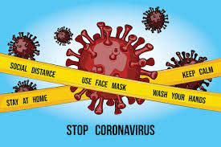

Hygiene and social distancing
are the most effective ways to stay safe from coronavirus infection. With the help of these tools we can put check on the spread COVID-19 pandemic to a large extent.
Major prevention methods recommended by the WHO include; regularly and thoroughly clean hands with an alcohol-based hand rub or wash them with soap and water, maintaining social/physical distancing, avoid touching eyes, nose and mouth, and different protection measures based on the situations.5
It’s very well known that the COVID-19 outbreak has placed unprecedented demands on the health systems of many countries around the globe.6 This is expected to get even worse in the middle- and low-income countries where the health system is weak and fragile. In countries that are hardest hit, health facilities and workforce are currently swamped by activities related to controlling the pandemic.6
As a step for the preparation to respond to the COVID-19 pandemic, African countries have established a Taskforce for Corona virus Preparedness and Response (AFTCON) that works in tandem with the African Union Commission, Africa Centers for Disease Control and Prevention. In line with this and as a member state of the African Union, Ethiopian’s preparedness and the health system's capacity to respond to the COVID-19 is no exception.

Protect yourself and others around you by knowing the facts and taking appropriate precautions. Follow advice provided by your local health authority.
To prevent the spread of COVID-19: